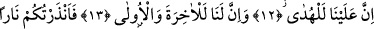
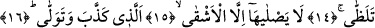
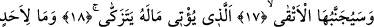
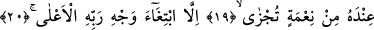
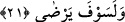

O ATEŞE,
ANCAK KÖTÜLER GİRER
12. Doğru yolu göstermek Biz’e âiddir.
13. Şüphesiz âhiret de dünya da bizimdir.
14. (Ey insanlar!) Alev alev yanan bir ateşle sizi uyardım.
15. O ateşe, ancak en kötüler girer.
16. Yalanlayıp yüz çeviren(kötüler).
17. İyiler ondan (ateşten) uzak tutulur.
18. Temizlenmek üzere malını hayra veren (iyiler, takvâ sahibleri)
19. O, kimseye karşılık görmek için iyilik yapmaz.
20. Rabbinin rızasını istemek başka
21. Ve o (buna kavuşarak) hoşnut olacaktır.
Bu cümle daha önce geçen cümlelerin anlamlarını ifâde eden bir başlangıç
cümlesidir. Yani büyük hikmetlere dayalı olan Bizim kazamız gereği doğru yolu
göstermek Biz’e âiddir. Çünkü Biz bütün mahlukatı ibâdet etsinler diye yarattık.
Dolayısıyla hidâyete giden yolu ve hidâyete götüren şeyleri onlara beyân etmek,
sapıklığı ve sapıklığa götüren yolu onlara açıklamak Biz’e âiddir. Biz bunu daha fazlası
yapılamayacak şekilde yaptık. Çünkü Biz teşvik etmek ve sakındırmak amacıyla her iki
yola giren kimsenin durumunu beyân ettik.
Buradan ortaya çıkıyor ki hidâyet arzulanan şeye insanı ulaştıran yolu göstermek
demektir. Yoksa asla arzuya ulaştıran şeyi göstermek değildir. “Biz’e âiddir”
ifâdesinden anlaşılan zorunluluktan maksad Allah Teâlâ’nın kazâ ve hikmeti gereği olan
vâcipliktir. Yoksa Mutezile mezhebinin iddiâ ettiği gibi âyet zâhiri alınarak kul için en
uygun (aslah) olanı yaratmanın Allah Teâlâ için vâcip/zorunlu olması değildir.
Kâşânî der ki: Akıl ve hissin nuru ile, aklî ve sem‘î delilleri bir araya getirerek,
istidlal ve istibsar üzere bulunarak Biz’e irşâd ederek doğru yolu göstermek Biz’e
âiddir.